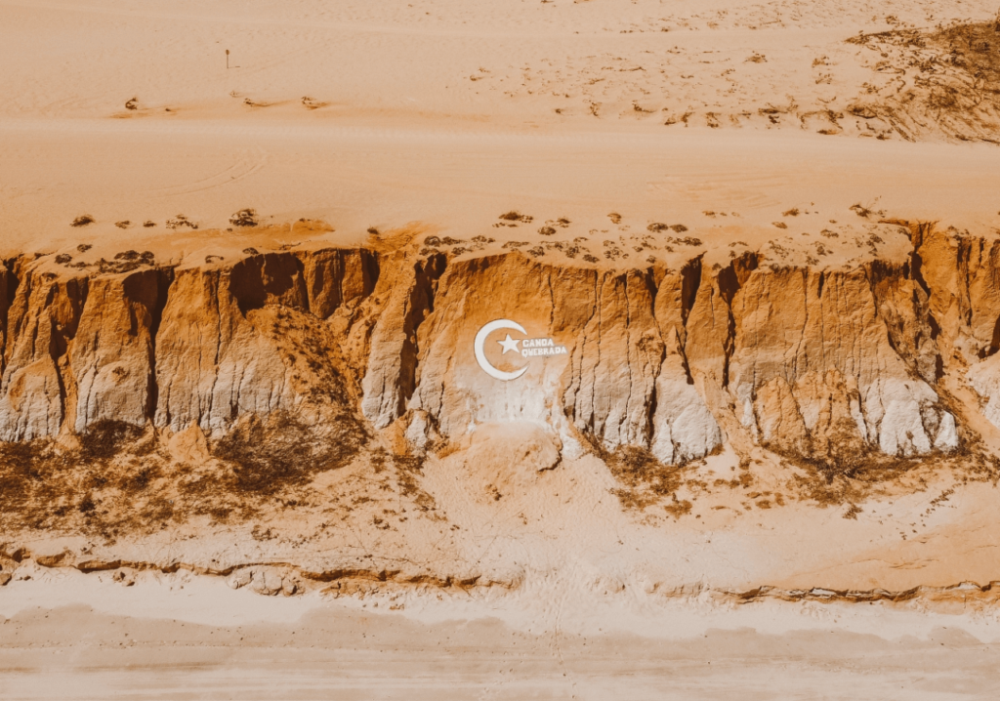
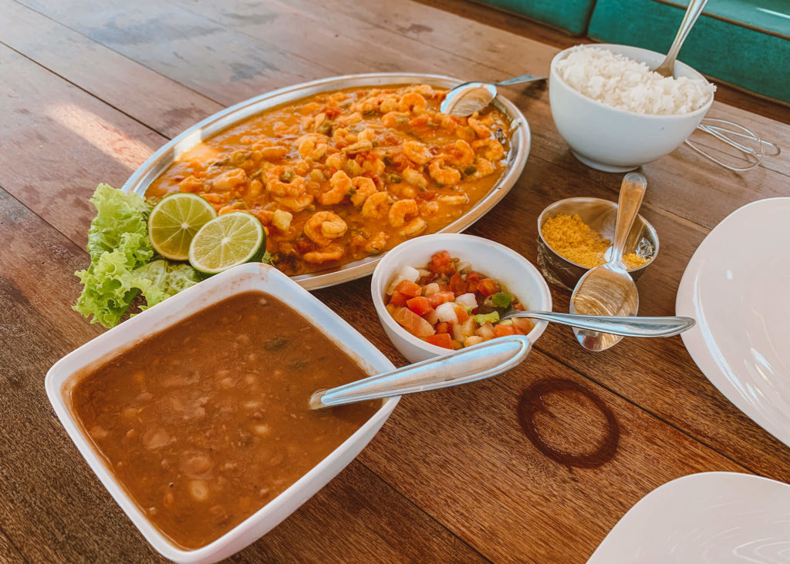

Ceará
Canoa Quebrada

Autor
Alisson Oliveira
Sou um Bacharel em Administração e Técnico em Informática, com mais de 10 anos de experiência na área de TI. Sempre busco ser ágil e resolutivo em minhas atividades. Além disso, sou um entusiasta da área de programação.
Descubra a Magia de Canoa Quebrada: Praias Deslumbrantes, Aventuras ao Ar Livre e Sabores Irresistíveis!
A Praia de Canoa Quebrada, localizada no estado do Ceará, Brasil, é um destino turístico bastante popular e atrativo por diversas razões. Aqui estão alguns motivos pelos quais vale a pena visitar essa praia deslumbrante:
Belezas naturais:
Canoa Quebrada é conhecida por suas paisagens deslumbrantes. Suas falésias coloridas e imponentes oferecem vistas panorâmicas incríveis do oceano. Além disso, a praia possui areias brancas e águas cristalinas, perfeitas para banho e mergulho.
Atividades ao ar livre:
Os visitantes de Canoa Quebrada têm uma variedade de atividades ao ar livre para desfrutar. É possível fazer passeios de buggy pelas dunas, praticar sandboard, passear de jangada e até mesmo fazer voos de parapente sobre as falésias, proporcionando uma experiência emocionante e inesquecível.
Vida noturna vibrante:
Canoa Quebrada é famosa por sua vida noturna animada. A rua principal, conhecida como "Broadway", oferece uma variedade de bares, restaurantes e casas noturnas que ficam abertos até tarde da noite. É um ótimo lugar para desfrutar de música ao vivo, dançar e conhecer pessoas de diferentes partes do mundo.
Pousadas aconchegantes:
A região de Canoa Quebrada possui uma ampla oferta de pousadas e hotéis que atendem a todos os tipos de viajantes e orçamentos. Muitas pousadas estão localizadas próximas à praia e oferecem uma atmosfera tranquila e relaxante, além de serviços e comodidades para tornar a estadia dos turistas mais confortável.
Culinária local:
A culinária em Canoa Quebrada é um verdadeiro deleite para os amantes da gastronomia. A região oferece uma variedade de pratos à base de frutos do mar frescos, como lagosta, camarão, peixes e caranguejos. Além disso, você encontrará opções de restaurantes com cozinha regional, com pratos típicos do Nordeste brasileiro, como tapiocas, cuscuz e acarajé.
É importante ressaltar que Canoa Quebrada é um destino turístico bastante movimentado, especialmente durante os períodos de alta temporada. Portanto, é recomendável planejar a viagem com antecedência e reservar acomodações com antecedência para garantir uma estadia tranquila e aproveitar ao máximo tudo o que essa praia incrível tem a oferecer.